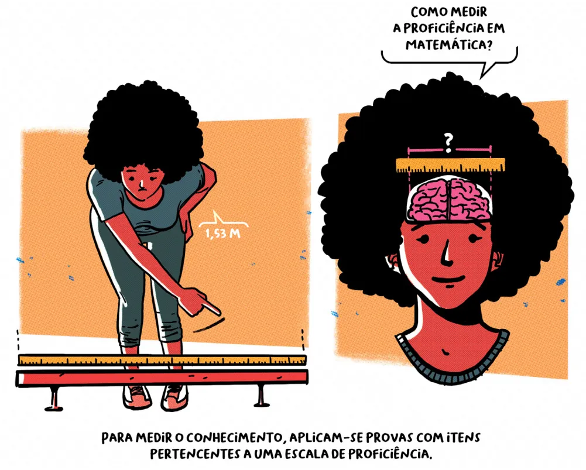
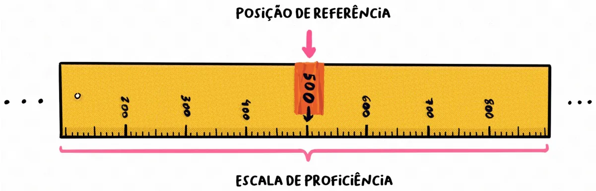
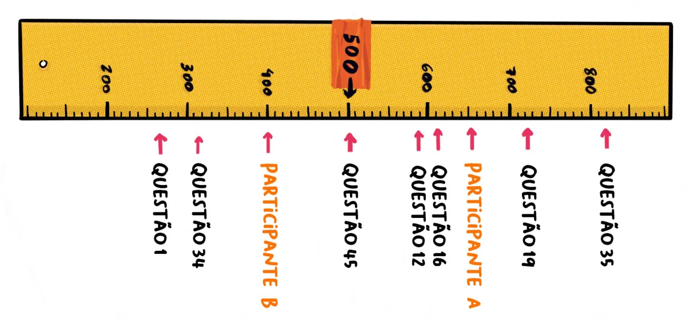
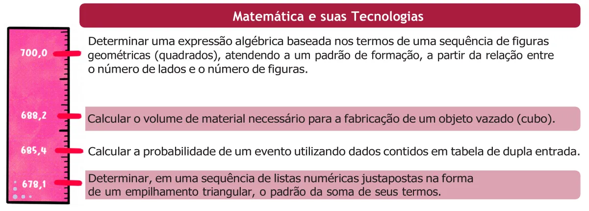
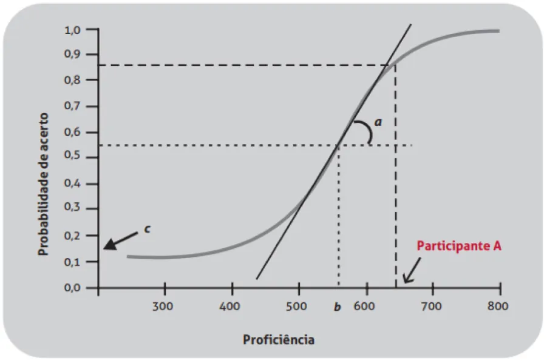
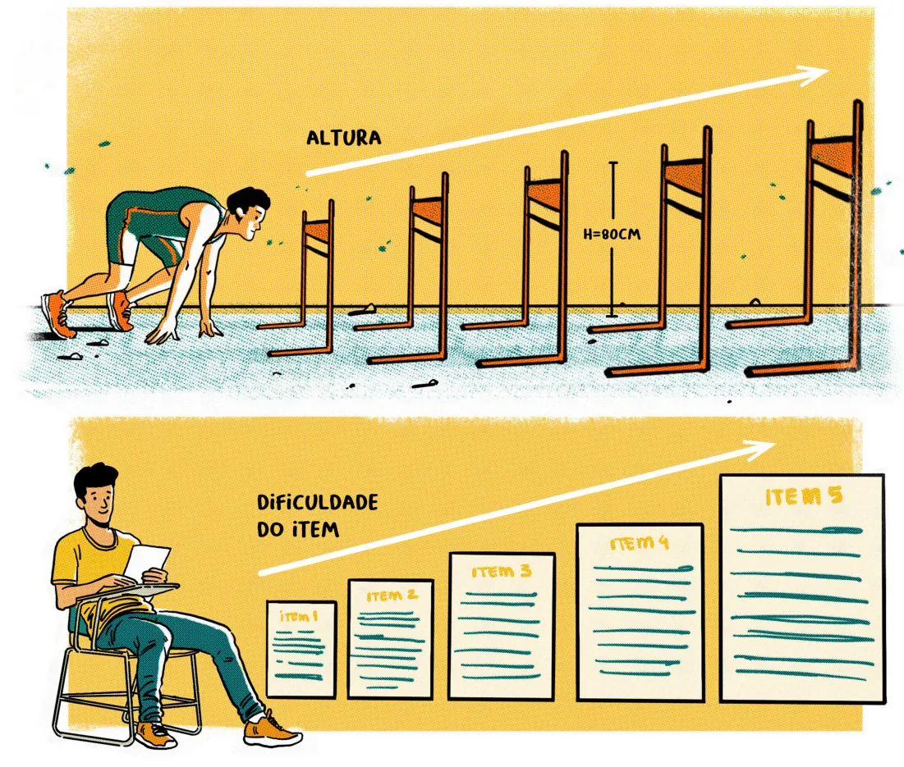
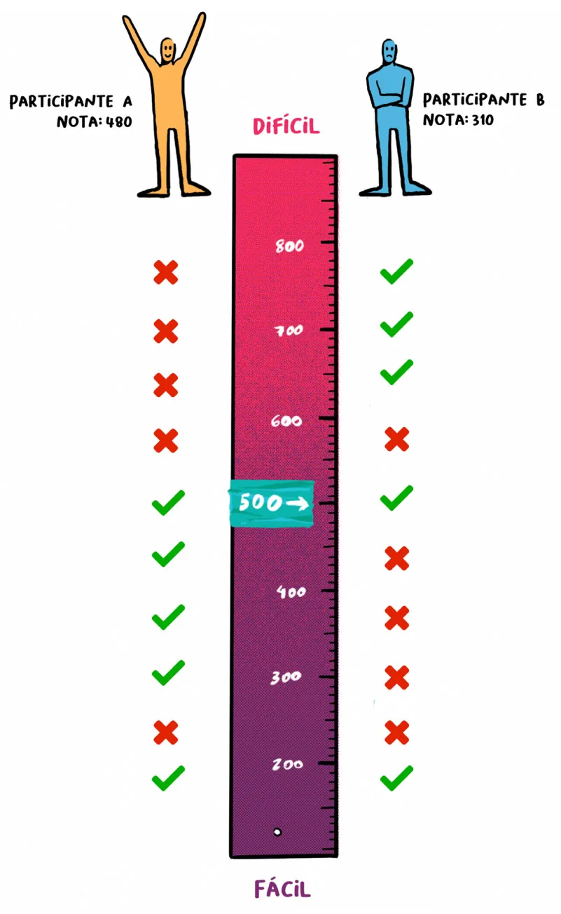
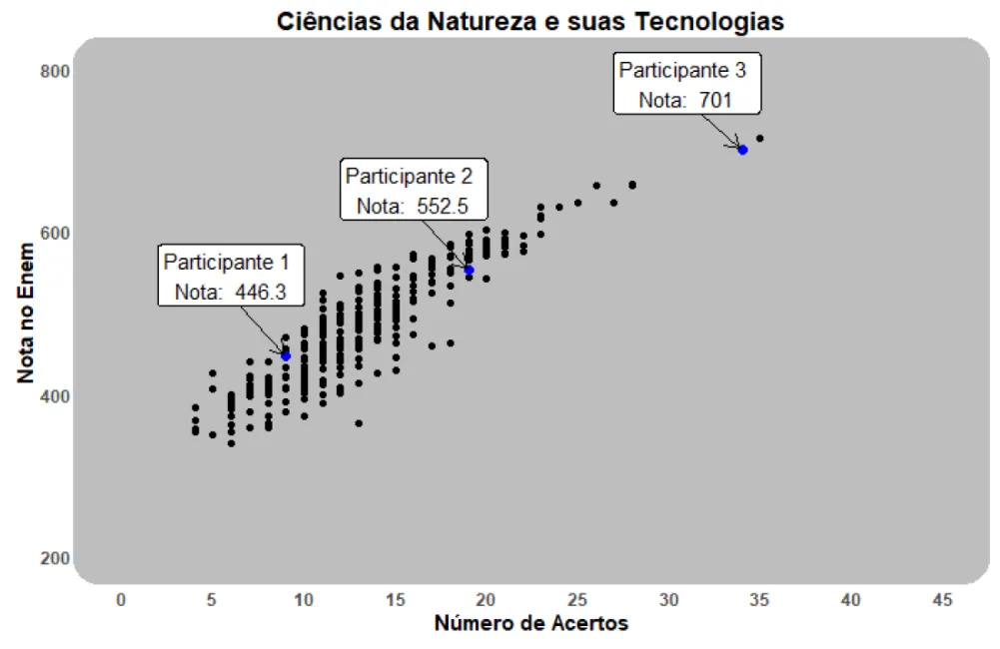
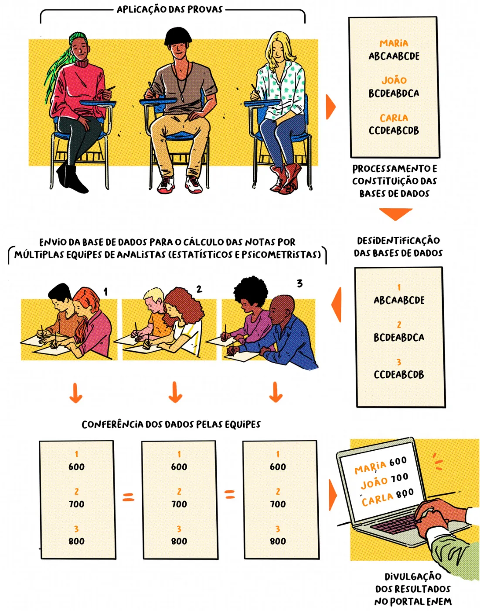
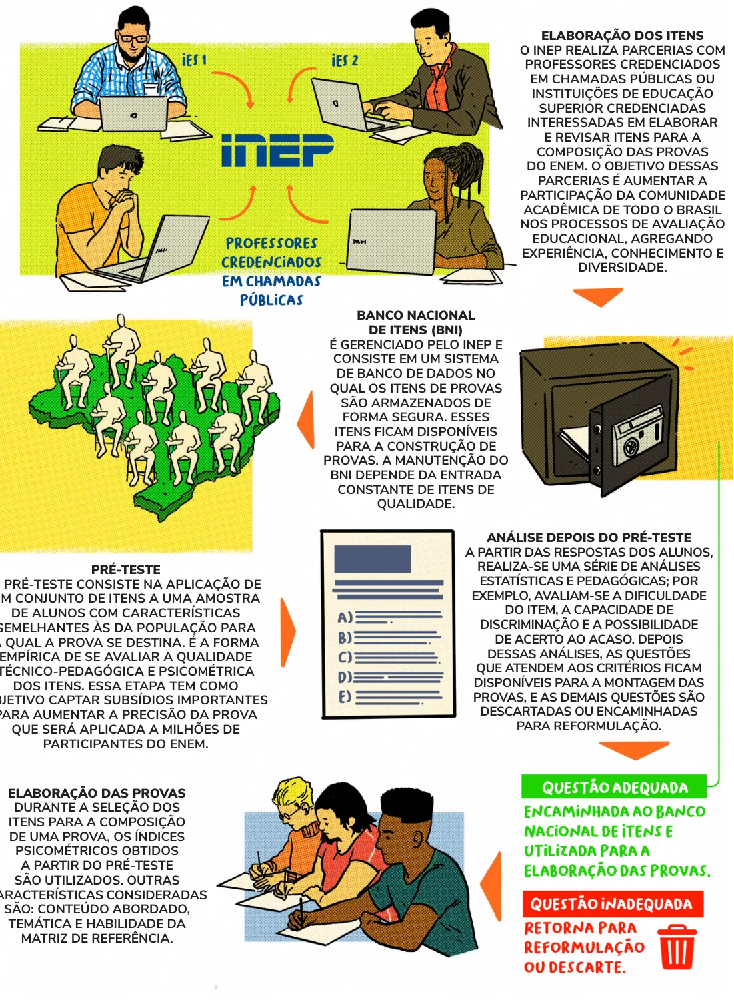

Por que a nota do Enem não é só contar acertos
Na escola, costuma ser simples: cada questão vale o mesmo, e quem acerta 6 de 10 tira 6. Mas imagine dois alunos que acertaram 6 questões, não as mesmas. Será que eles sabem a mesma coisa? O Enem usa a Teoria de Resposta ao Item (TRI) para levar essa diferença em conta. Ela olha quais questões a pessoa acertou e errou, e não apenas quantas.
1. Medir conhecimento é como usar uma régua
Para medir uma distância, usamos uma régua e um padrão, como o centímetro. Só que conhecimento não dá para ver. No Enem, o instrumento de medida é a prova, e o padrão é uma escala, que funciona como uma régua.
O resultado dessa medida se chama proficiência, que é simplesmente a nota do participante em cada área. A redação é corrigida de outra forma e não entra nesta explicação.

2. Questões e alunos ficam na mesma régua
Esse é o grande diferencial da TRI. Cada área tem a sua régua, e o Inep definiu dois pontos de referência para ela: 500 é o desempenho médio dos concluintes regulares do ensino médio de 2009, e 100 é o desvio padrão, uma medida de como as notas deles se espalhavam em torno dessa média. Assim, uma nota 600 fica um desvio padrão acima daquela média.

Questões fáceis ficam na parte de baixo da régua, e as difíceis, na parte de cima. O participante também recebe uma posição nela. No exemplo abaixo, o Participante A provavelmente domina as questões 1, 34, 45, 12 e 16, que estão abaixo dele, e não domina a 19 e a 35. O Participante B deve dominar só a 1 e a 34. Por isso, a nota de A é maior.

Cada ponto da régua também tem um significado pedagógico: ele diz o que costuma dominar quem está naquele nível. O Inep chama isso de mapa de itens. Veja um trecho de Matemática, perto dos 700 pontos:

3. Cada questão tem três números de identidade: a, b e c
b: dificuldade. Quanto maior, mais difícil é a questão. É o ponto da régua em que a questão "vira": abaixo dele, o aluno tende a errar; acima, tende a acertar.
a: discriminação. Mede o quanto a questão separa quem domina a habilidade de quem não domina. Com a alto, a curva fica íngreme, como um degrau.
c: acerto casual. É a chance de acertar sem dominar a habilidade (nas provas analisadas aqui, em média de 14% a 18%).
Esses valores vêm de pré-testes e formam o perfil de cada questão, desenhado em uma curva. No exemplo do guia, quem tem proficiência 650 tem cerca de 85% de chance de acertar aquela questão.

Experimente: mude a e b e veja o que acontece com a curva.
A curva cinza é uma questão de mesma dificuldade com a baixo (a = 0,8). Quanto maior o a, mais a questão se comporta como um "filtro" exato. Por isso, errar uma questão de a alto costuma custar muitos pontos.
Para ler o b na régua do Enem, este site usa 500 + 100 × b: um b de 1,5 vira 650. No mapa de itens, o Inep posiciona a questão um pouco acima do b, onde a chance de acerto fica perto de 65%.
Essa régua é uma convenção didática, usada aqui em toda a análise. A posição exata de uma questão em pontos de nota muda por área: recalculando as notas com os microdados, chegamos a Linguagens 500,0 + 108,1 × b, Humanas 501,5 + 112,3 × b, Natureza 501,2 + 113,1 × b e Matemática 500,0 + 129,6 × b, iguais nos quatro anos. Isso não muda a ordem das questões, as faixas nem as comparações dentro de uma área, mas o valor não deve ser lido como a nota exata do aluno.
4. A coerência: por que os mesmos acertos podem dar notas diferentes
O conhecimento se acumula: habilidades mais complexas pedem o domínio das mais simples. É como numa corrida com barreiras cada vez mais altas. Quem salta 80 cm deve conseguir saltar as barreiras menores.
Por isso, o esperado é que quem acerta questões difíceis também acerte as fáceis. Quando isso não acontece, os acertos somam menos à nota.


Na figura, os dois participantes acertaram 5 de 10. O Participante A acertou as mais fáceis e passou a errar depois de certo nível, como se espera: ficou com 480. O Participante B acertou as mais difíceis e errou as fáceis: ficou com 310.
Acertar "no chute" não tira pontos. Esse acerto só vale menos do que valeria dentro de um padrão coerente. Uma questão certa sempre aumenta a nota, e uma em branco é corrigida como errada. Então, é sempre melhor responder.
Essa ideia é o que a seção "Alunos gêmeos" mede nos dados reais do Enem, comparando alunos com o mesmo número de acertos.
5. Como sai o número da nota
Não existe uma conta simples de somar pontos. O método usado no Enem se chama EAP e pode ser resumido em três passos:
- Testa todas as notas possíveis. Para cada uma, calcula a chance de alguém naquele nível dar exatamente aquelas respostas, multiplicando as chances questão por questão.
- Considera o ponto de partida. Essa chance é combinada com o que se sabe do grupo de referência: a maioria das pessoas fica perto da média.
- Tira a média. O resultado é uma "montanha" de notas possíveis. A nota final é o ponto de equilíbrio dessa montanha.
Teste você: clique nas questões para marcar acerto ou erro. Elas vão da mais fácil (Q1) para a mais difícil (Q10).
Simulação com o método real, mas com 10 questões fictícias, todas com a = 1,5 e c = 0,15, e com b distribuído como na figura acima. A prova tem 45 questões, com parâmetros próprios, então estes números não são notas do Enem nem precisam coincidir com os da figura.
6. Então o número de acertos não importa?
Importa, e muito. Quem acerta muito tem nota alta, e quem acerta pouco tem nota baixa. O gráfico do guia mostra isso com 300 participantes de Ciências da Natureza de 2020. A diferença é que, para o mesmo número de acertos, as notas podem variar.
Se a relação é tão forte, por que usar a TRI? Porque ela permite comparar provas diferentes da mesma área, o que os acertos não permitem, já que uma prova pode ser mais difícil que outra. Ela também dá significado pedagógico a cada ponto da régua e ajuda a evitar empates.

7. Da prova ao resultado

O cálculo exige estatística avançada e computador. Por isso, ele é feito de forma independente por equipes diferentes de especialistas, seguindo seis etapas:
- Aplicação das provas.
- Processamento das respostas nas bases de dados.
- Retirada dos nomes dos participantes.
- Envio dos dados às equipes de analistas, para o cálculo das notas.
- Conferência dos resultados entre as equipes.
- Divulgação no Portal do Enem.
E de onde vêm as questões?
Professores credenciados elaboram e revisam as questões, que ficam no Banco Nacional de Itens. Elas passam por um pré-teste com alunos parecidos com o público do Enem. As aprovadas podem entrar em uma prova, e as demais são reformuladas ou descartadas.

8. Dúvidas comuns
Acertei mais questões do que no ano passado. Por que minha nota caiu?
A nota não vem direto do número de acertos. Pode ser que a prova deste ano tivesse questões mais fáceis, ou que o seu padrão de respostas combine com uma proficiência menor, por exemplo se você errou questões fáceis.
Acertei 40 de 45. Por que minha nota não foi muito mais alta?
Primeiro, porque o máximo de cada prova é limitado pelas questões dela. Em Ciências Humanas 2020, gabaritar dava 862,6. O guia cita o caso de quem acertou 40 e ficou com 706,7: provavelmente algumas das cinco questões erradas eram bem fáceis.
Acertei mais em Humanas do que em Matemática. Por que a nota de Matemática é maior?
Cada área tem a sua própria régua, então as notas de áreas diferentes não se comparam diretamente. Um mesmo número de pontos representa coisas diferentes em cada uma.
Qual é o peso de cada questão?
Não existe peso no cálculo. A nota sai da combinação das respostas com os parâmetros de cada questão, e esses parâmetros não funcionam como pesos: não dá para chegar à nota com uma média ponderada. Quando este site fala em "preço do erro", é a diferença de nota observada nos dados, e não um peso oficial.
Chutar diminui a nota? E deixar em branco?
Um acerto nunca diminui a nota, só pode valer menos do que valeria com um padrão coerente. Questão em branco é corrigida como errada. Por isso, o guia diz que é sempre melhor responder.
A TRI descobre quem chutou?
Ela não sabe o que aconteceu na sua cabeça. O que ela vê é um padrão: acertar questões difíceis e errar as fáceis é menos coerente com quem domina o conteúdo, então esses acertos somam menos.
A nota é de 0 a 1000?
Não. A escala não tem limite fixo. O mínimo e o máximo dependem das questões daquela prova: muitas questões fáceis tendem a baixar o máximo, e muitas difíceis tendem a subir o mínimo. Por isso, gabaritar não dá 1000 e errar tudo não dá 0.
Minha nota depende de quem fez a prova comigo?
Não. Ela depende das suas respostas e das características das questões. O desempenho dos concluintes de 2009 serviu só para definir o ponto de referência da régua.
A TRI deixa a prova mais difícil?
Não. A dificuldade vem das questões. A TRI quase não muda a ordem geral dos participantes em relação ao percentual de acertos, mas detalha melhor as notas e ajuda a evitar empates.
Duas pessoas com exatamente as mesmas respostas podem ter notas diferentes?
Não. Com os parâmetros das questões definidos, o mesmo padrão de respostas sempre dá a mesma nota.
9. Glossário
- Item
- é o mesmo que questão.
- Proficiência
- é a nota do participante, a medida do conhecimento dele na área.
- Escala
- é a "régua" onde ficam as questões e os participantes. Cada área tem a sua.
- Parâmetros
- são os três números de cada questão: a (discriminação), b (dificuldade) e c (acerto casual).
- Coerência pedagógica
- é acertar o que é mais fácil e errar a partir de certo nível de dificuldade.
- Banco Nacional de Itens
- é o sistema onde o Inep guarda as questões que passaram pelo pré-teste.
- Pré-teste
- é a aplicação das questões a um grupo parecido com o público do Enem, antes de elas entrarem na prova.
- EAP
- é o método que calcula a nota: a média da "montanha" de notas possíveis.
Para quem quer a parte técnica
O Enem usa o modelo logístico de três parâmetros (Birnbaum, 1968). A chance de o participante acertar a questão i é:
P(acerto | θ) = ci + (1 − ci) / (1 + exp[−ai (θ − bi)])
Na página 24, o guia imprime o expoente sem o sinal de menos. Do jeito impresso, a chance cairia conforme o conhecimento aumenta, o que contradiz o próprio texto, que descreve uma função crescente. Por isso, escrevemos aqui a forma com o sinal. Foi essa forma que reproduziu as notas oficiais na nossa conferência.
Pressupostos: unidimensionalidade (uma habilidade dominante por área) e independência local (a resposta a uma questão não influencia as outras). A invariância indica que os parâmetros das questões não dependem de quem responde.
Parâmetros das questões: estimados pelo método bayesiano marginal, com o algoritmo EM e 40 pontos de quadratura. O grupo de referência tem média 0 e variância 1.
Nota: média da distribuição a posteriori (EAP), com a precisão medida pelo desvio padrão a posteriori (PSD).
Conferência neste site: recalculamos as notas de 2022 a 2025 com o EAP e os parâmetros publicados nos microdados. A diferença média para as notas oficiais ficou abaixo de 0,1 ponto.
Para se aprofundar, indicações do guia: Andrade, Tavares e Valle (2000), Teoria da Resposta ao Item: conceitos e aplicações; Baker e Kim (2004); Hambleton, Swaminathan e Rogers (1991); Klein (2003); Pasquali (1997), Psicometria: teoria e aplicações.
Fonte dos textos de base e das figuras: BRASIL. Instituto Nacional de Estudos e Pesquisas Educacionais Anísio Teixeira (Inep). Entenda a sua nota no Enem: guia do participante. Brasília, DF: INEP, 2021. Baixar o guia no site do Inep. O guia permite a reprodução, desde que citada a fonte. A simulação, os gráficos interativos e os comentários sobre os microdados são deste site.
Cada coluna é um número de acertos. A barra grossa mostra onde estão 80% dos alunos; a linha fina vai da menor à maior nota; o traço é a nota mais comum (mediana). Os pontinhos ao fundo são alunos reais.
Dois alunos, mesmo número de acertos
Cada bolinha é uma questão, ordenadas da mais fácil (esquerda) para a mais difícil (direita). Bolinha preenchida significa acerto. A TRI premia quem acerta as fáceis antes das difíceis, porque esse é o padrão de quem sabe. Acertar só as difíceis parece chute.
Dois alunos reais que acertaram a mesma quantidade de questões: o de menor nota (Aluno A) e o de maior nota (Aluno B) naquele número de acertos, na aplicação escolhida. Ficaram de fora cartões com muitas questões em branco ou com a mesma letra marcada em quase todas. Em Linguagens, só alunos de inglês, para que as questões 1 a 5 sejam as mesmas nos dois cartões.
Como a vantagem da coerência muda com o número de acertos
Diferença de nota média entre os 20% mais coerentes e os 20% menos coerentes, com o mesmo número de acertos. Acima de zero, os mais coerentes tiraram mais; abaixo de zero, tiraram menos. Só aparecem faixas com 30 alunos ou mais. Clique em uma barra para ver os alunos daquela faixa.
O que é o percentual de coerência pedagógica? Pense em cada dupla formada por uma questão que o aluno acertou e uma que ele errou. A dupla é coerente quando a questão acertada é a mais fácil das duas. O percentual diz quantas duplas do aluno são coerentes.
100%: acertou exatamente as mais fáceis e errou as mais difíceis. Perto de 50%: acertos espalhados como num chute. Abaixo de 50%: acertou mais as difíceis do que as fáceis. O modelo considera esse padrão menos provável.
Comparação por bloco de questões
Os dois cartões-resposta
Questões em ordem da mais fácil (esquerda) para a mais difícil (direita). A cor da borda é o bloco. Bolinha cheia é acerto e bolinha vazia é erro. Passe o mouse sobre uma bolinha para ver a questão.
E todos os outros alunos com esse número de acertos?
Cada ponto é um aluno. Na horizontal, o percentual de coerência pedagógica; na vertical, a nota. O vermelho é o Aluno A e o verde, o Aluno B.
Altura da barra é a dificuldade de cada questão na régua do Enem. As faixas seguem uma classificação própria de cada área, calibrada em 540 itens de 2012 a 2023.
Como a prova se distribui nas faixas
Cada linha é uma habilidade da Matriz de Referência. Cada bolinha é uma questão da prova, posicionada pela dificuldade. À direita, o número de questões nesta prova comparado à média por prova de 2012 a 2023.
Quanto mais alta a barra, mais a questão separa quem sabe de quem não sabe. Usamos faixas práticas de leitura: baixa (abaixo de 1), moderada (1 a 2), alta (2 a 3) e muito alta (3 ou mais).
Escolha a área e a aplicação no topo da página e a ordem aqui embaixo. A cor mostra o bloco de dificuldade: fácil, média ou difícil.
Para cada número de acertos, comparamos alunos que acertaram e que erraram cada questão, todos com o mesmo total de acertos. Isso mostra quanto custa errar cada questão. Depois perguntamos o que explica melhor por que umas questões custam mais que outras: a dificuldade (b) ou a discriminação (a)?
A virada em cada ano
Cada quadro é um ano. Azul é o peso do a; laranja, o peso do b. A linha amarela marca a virada daquele ano.
Quem pesa mais no preço do erro, a ou b? Média dos quatro anos
100% quer dizer que, sabendo só aquele parâmetro da questão, dá para prever quanto custa errá-la. A linha grossa é a média de 2022 a 2025 e as linhas finas são cada ano. A faixa amarela marca a partir de onde o a passa a pesar mais na média.
Quantos pontos custa errar cada tipo de questão: média dos quatro anos
Em pontos, comparado a errar uma questão qualquer. Acima de zero, errar aquele tipo de questão custa mais que o normal; abaixo de zero, custa menos.
A virada em cada área, de 2022 a 2025
Comparamos alunos com exatamente o mesmo número de acertos (35, 36, 37…): os que acertaram uma questão e os que erraram aquela mesma questão. A diferença média de nota é o "preço" de errar aquele item, já descontado o número de acertos.
Preço do erro × parâmetro a
Preço do erro × parâmetro b
As questões que mais custaram para o grupo de 35+
Para cada questão, o número de alunos que erraram apenas ela e quantos pontos ficaram abaixo de quem gabaritou. Como a nota depende de quais questões a pessoa acertou, quem erra a mesma questão tira, na prática, a mesma nota.
Aqui comparamos alunos que ficaram a um ou dois acertos do máximo e cuja única diferença foi uma questão: o Aluno A errou uma questão que o Aluno B acertou, e o Aluno B errou outra que o Aluno A acertou. O resto da prova foi idêntico em acertos e erros. Na TRI, o mesmo padrão de respostas dá, na prática, a mesma nota, então a diferença vem só dessa troca.
Cada competência vale de 0 a 200 pontos, e a nota final é a soma das cinco. Medimos quantos pontos, em média, cada grupo de alunos deixou de ganhar em cada competência. Como a redação é a mesma para todos, aqui usamos a amostra inteira: todos os alunos com redação válida, de todas as cores de caderno. A aplicação regular e o PPL ficam separados, porque tiveram temas próprios.
Pontos perdidos em média, por competência
Quanto maior a barra, mais nota o grupo deixou na mesa naquela competência. À direita, quantos alunos do grupo tiraram a nota máxima (200) nela.
Os quatro grupos lado a lado
Situação das redações (zeradas, em branco, fuga ao tema…)
Análise da Dificuldade por Disciplina
Dificuldade média de cada prova
Análise da Discriminação por Prova
Toque no número de uma questão para ver os parâmetros, o desempenho dos alunos e a questão como ela saiu no caderno amarelo. A cor do número é o bloco de dificuldade: fácil, média ou difícil. Questões anuladas aparecem tracejadas.
Escolha a área, o ano, a dificuldade e se quer filtrar por competência ou por habilidade. Toque em uma questão para ver a questão como saiu no caderno amarelo, os parâmetros e o desempenho dos alunos. O gabarito fica escondido até você tocar em Ver gabarito, para dar para treinar como num simulado.